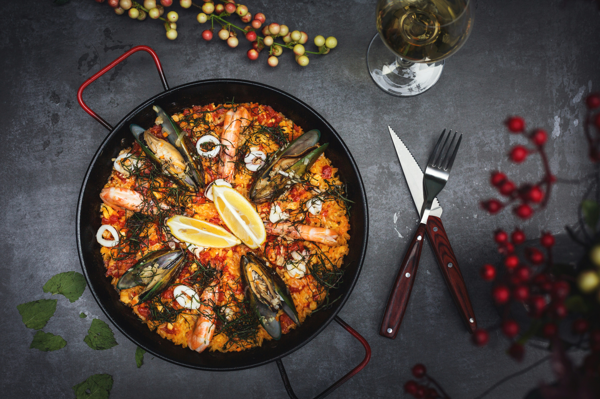
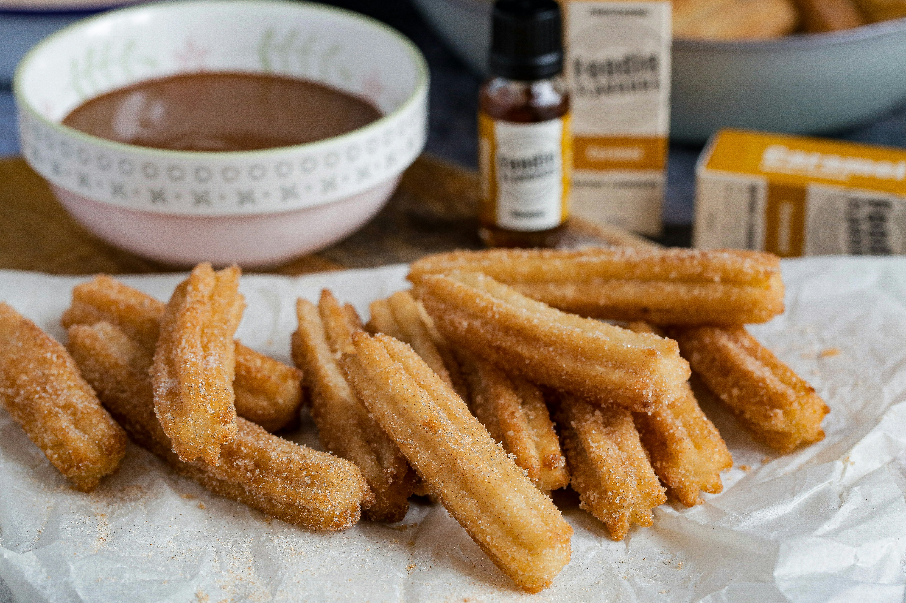

Spanish Cuisine
A journey to Spain's Mediterranean coast.
What would you choose?
Mexico has more Spanish speakers than Spain itself

Spanish is an official language in more than 20 countries.

The Spanish word for 'sugar,' azúcar, is very similar to the Arabic word (sukkar).
